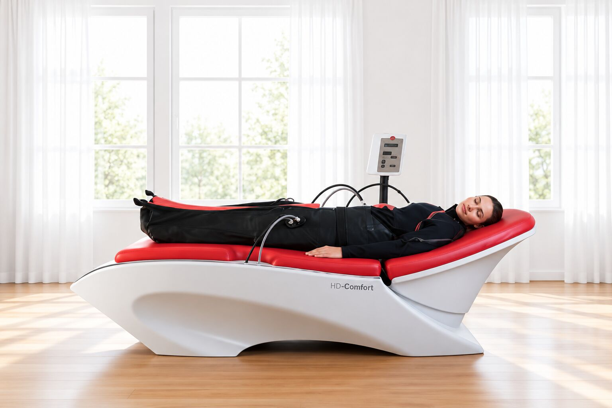
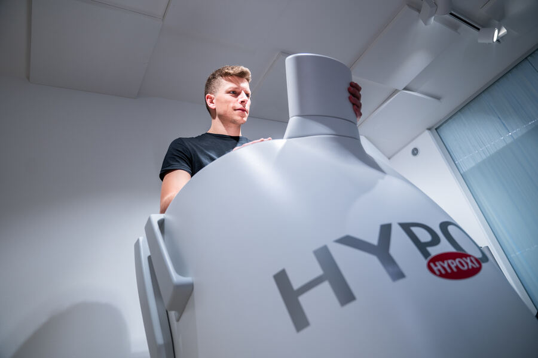
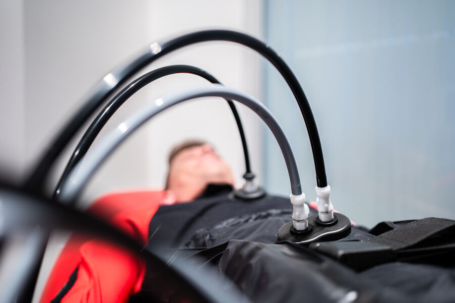
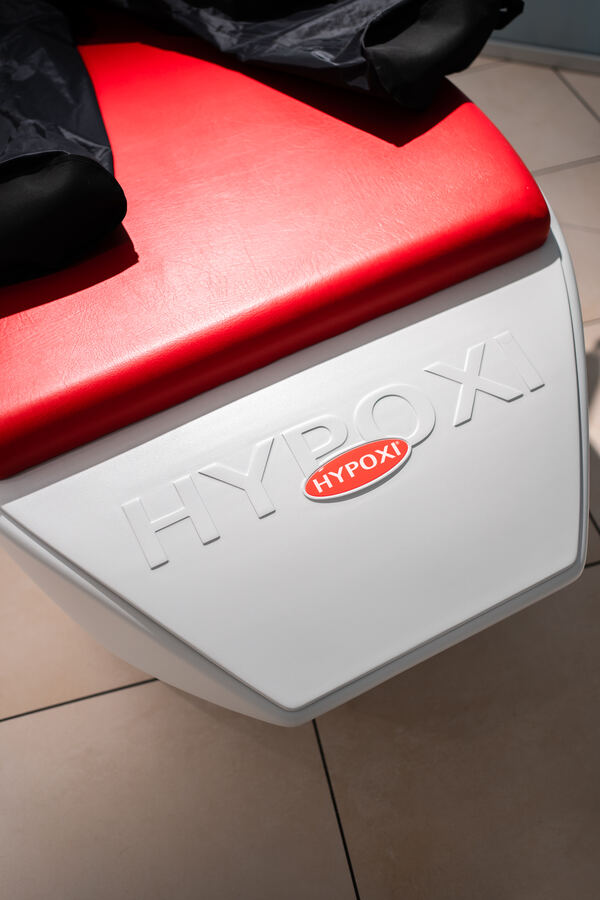

Hypoxi
Rimodellamento del corpo & rassodamento della pelle. Agisce proprio dove lo sport da solo spesso raggiunge i suoi limiti.

Che cos’è Hypoxi?
Hypoxi è uno speciale concetto di allenamento per rimodellare la figura in modo mirato, proprio nei tipici punti critici: addome, fianchi, glutei e cosce.
Succede a molti: nonostante sport e alimentazione consapevole, proprio queste zone restano ostinate. Qui interviene Hypoxi, con una combinazione di pressione alternata, movimento moderato e alimentazione equilibrata.
Non servono prestazioni sportive estreme né diete drastiche. L’allenamento è delicato, non sollecita le articolazioni ed è piacevole.
Il principio dei 3 pilastri
Pressione alternata
In apparecchi speciali, ad esempio un ergometro in una camera a bassa pressione o una tuta a pressione sul lettino, si alternano bassa e alta pressione. Ciò dovrebbe stimolare la circolazione nelle zone critiche, spesso poco irrorate, e facilitare l’eliminazione degli acidi grassi.
Movimento moderato
Un allenamento di resistenza leggero e poco faticoso, ad esempio pedalare da seduti o sdraiati, attiva il metabolismo. L’aumento della massa muscolare non è l’obiettivo principale.
Alimentazione equilibrata
Un’alimentazione sana ed equilibrata sostiene il processo. Diete rigide o digiuni non sono assolutamente previsti.

Allenamento & trattamento
Da Le Clou hai a disposizione una sala Hypoxi dedicata e tranquilla, con apparecchio di allenamento Hypoxi e lettino per il trattamento con la tuta Hypoxi.
Quale trattamento è adatto a te e con quale frequenza, lo valutiamo insieme nel colloquio iniziale / allenamento di prova.
Prenota una consulenzaIl tuo percorso con Hypoxi
Appuntamento
Chiamaci o scrivici per fissare un colloquio iniziale / allenamento di prova senza impegno.
Colloquio iniziale / allenamento di prova
Parliamo dei tuoi obiettivi e verifichiamo se Hypoxi è adatto a te.
Piano personalizzato
Insieme stabiliamo quali trattamenti fare e con quale frequenza.
Trattamenti
Appuntamenti regolari in studio, con assistenza personale.
Buono a sapersi
Serve essere sportivi?
No. Il movimento con Hypoxi è moderato e non sollecita le articolazioni. Non è paragonabile a un faticoso allenamento in palestra.
Devo fare una dieta?
No. Hypoxi non punta volutamente su diete rigide, ma su un’alimentazione equilibrata. Nel colloquio iniziale / allenamento di prova ti diamo volentieri qualche semplice consiglio.
Hypoxi è adatto a me?
Lo verifichiamo nel colloquio iniziale / allenamento di prova. In caso di dubbi sulla salute, patologie preesistenti o durante la gravidanza, parlane prima con il tuo medico.
Come prenoto un appuntamento?
Chiamaci al +39 338 194 5746 oppure scrivi un’e-mail a info@leclou.bz. Riceviamo su appuntamento dal lunedì al venerdì.

«Sentiti bene nella tua pelle.»Hypoxi da Le Clou